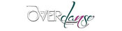

Le GBI training est un conditionnement physique, accessible à tous, qui combine la force athlétique, l'haltérophilie, la gymnastique et les sports d'endurance.
Il vient de dix compétences athlétiques : endurance cardiovasculaire et respiratoire, endurance musculaire, force, flexibilité, puissance, vitesse, agilité, coordination, équilibre et précision.
Réussissez à vous adapter à chacun des efforts physiques rencontrés chaque jour grâce à la variété des entraînements,
l’utilisation de mouvements poly-articulaires et l’intensité élevée du travail.
Courrez, ramez, grimpez, sautez, déplacez des objets, réalisez des exercices au poids du corps, au TRX, utilisez des haltères, des VIPR, des Kettlebells, des Médecine Balls... Les possibilités sont infinies.
Hommes, femmes, équipes sportives, le GB ITraining améliore vos qualités de vie et vos performances ! Nos coachs et vos partenaires sont là pour vous motiver !
Le GBI training BOXE ce cours en petit groupe alterne un travail de frappe sur sacs, pattes d'ours ou bouclier et travail cardiaque en interval training. L'objectif est de vous défouler tout en améliorant votre condition physique et votre technique de frappe.
Ce cours est ouvert à toutes et tous.
Le GBX FIT activité destinée aux pratiquants réguliers de cours fitness haute intensité, aux sportif recherchant le dépassement de soi même, aux sportifs de haut niveau pour accroître leurs performances.
cette méthode d’entraînement combine des mouvements de gymnastique, haltérophilie et force athlétique.
Une séance GBX FIT est faite d’une succession de séries de différents mouvements fonctionnels (mouvements naturels pour le corps) où l’on va soulever, pousser, lancer, tirer, grimper, sauter etc…
Le programme du jour (Work Of Day), combine des mouvements qui visent à améliorer les qualités de santé physiques et mentales, telles que l’endurance cardiovasculaire, la force, l’agilité, la puissance, la résistance, la souplesse, la vitesse, l’équilibre, la coordination, et la précision.
Le SPRINT est un cours de 30 minutes en interval training de haute intensité (H.I.I.T.), qui utilise un vélo indoor pour obtenir très vite des résultats
Ce type d’entraînement intense aux résultats très rapides a un impact minime sur les articulations.
Un certain niveau de forme est requis pour ce cours.
Nous recommandons d’intégrer 2 sessions de sprint par semaine en plus de votre entraînement actuel, cela vous permettra d'atteindre vos objectifs encore plus rapidement à coup sur.
Le BODYJAM™ est le premier cours dansé accessible à tous, y compris aux débutants.
Toutes les musiques et rythmes du monde, salsa, hip hop, funk, disco, techno se rencontrent dans ce cours qui vous fera ressentir tant d’émotions, de plaisir et d’enthousiasme que vous ne pourrez plus vous en passer.

Overdanse c'est un nouveau programme fitness danse "made in France" qui utilise un style musical actuel et entraînant, créant à chaque édition une nouvelle ambiance et de nouvelles combinaisons de pas.
Ces séances sont exécutées sur différents niveaux d'intensité et de difficulté; Chaque participant est libre au sein du même cours de choisir le niveau qui lui convient le mieux. Overdanse c'est fun, innovant, simple et dansé!
Overdanse'All ce nouveau programme fitness danse "made in France" est une extension plus dansée de l'overdanse. Pendant 1h vous bougerez sur des rythmes endiablés et travaillerez votre style grâce à différentes chorégraphies.
Le RPM™ est le programme de cyclisme en salle, dans le cadre duquel vous roulez au rythme d’une musique entraînante.
Prenez la route avec votre coach qui guidera le peloton par monts et par vaux, sur le plat, dans les ascensions, les contre-la-montre et "l’interval training" (entraînement fractionné).
Découvrez l’athlète qui se cache en vous.
La sueur et les calories brûlées feront monter votre taux d’endorphine.
Le BODYCOMBAT™ est un puissant cours cardio extrêmement défoulant.
Ce programme hautement énergique s’inspire des arts martiaux et puise dans des disciplines aussi variées que le karaté, la boxe, le taekwondo, le tai chi et la muay thai.
Rythmé par une musique entraînante et guidé par des instructeurs performants, vous brûlez des calories et améliorez votre capacité cardiovasculaire à force de frappes, de coups de poing, de coups de pieds et de katas.
Le BODYATTACK™ c'est l'entraînement cardio par excellence, inspiré de nombreux sports, dont l'objectif est de développer l'endurance et la force, dans une ambiance électrique.
Sous forme d'interval training, y sont combinés des mouvements aérobiques athlétiques et des exercices de renforcement et de stabilisation.
Pratiquer le Bodyattack c'est se mettre en forme, rester en forme et l'être toujours plus!!!
Le BODYPUMP™ est LE cours collectif avec barre et poids qui renforce et sculpte l’ensemble de votre corps.
Ce programme sollicite tous les groupes musculaires principaux en utilisant les meilleurs exercices de musculation tels que les squats, les développés, les tirages et les curls.
Des choix musicaux extraordinaires, des instructeurs présents pour vous, votre propre sélection quant aux poids à utiliser et vous voila prêts à obtenir les résultats que vous êtes venu chercher rapidement.
Les cours de pump nécessitent une préparation technique indispensable. Avant le premier cours, prendre RDV avec un des professeurs.
Le CXWORX™ est un entraînement court (30min), précis et efficace pour mettre votre corps au défi.
Raffermissement Abdos/Fessiers, renforcement des muscles du dos par l'intermédiaire d'exercices avec ou sans matériel.
Accessible à tous.
Effets: Ventre et fesses plus fermes ! Amélioration de la stabilité et de la force du centre du corps.
T/C/F : Taille, Cuisses, Fessiers. Muscle, tonifie, et dessine
Le Gym Posturale :ce cours est accessible à tous et adaptable à chacun, il vise à renforcer l'ensemble des muscles posturaux, ceux-ci sont très nombreux et servent à tenir le squelette dans la posture debout. Nous recherchons la verticalité à l'aide d'un ballon.
O2 (relaxation, respiration, méditation) cours en petit comité mixant trois méthodes : relaxation, respiration, méditation. Le tout visant a utiliser la respiration pour gérer émotions et stress. Travail d’évasion, d'imagination, de prise de conscience pour améliorer la concentration ou la détente.
Le Bodybalance: associe des exercices de yoga, de tai-chi, et de pilates pour acquérir force et flexibilité, concentration et calme.
La respiration contrôlée, la concentration et une série structurée d'étirements, de mouvements et de postures, associés à des musiques choisies, contribuent à créer un entraînement complet qui plonge votre corps dans un état d'harmonie et d'équilibre, ce qui réduira votre niveau de stress.
Ce cours est accessible aux femmes enceintes, sauf contre indication de votre médecin pour la pratique sportive.